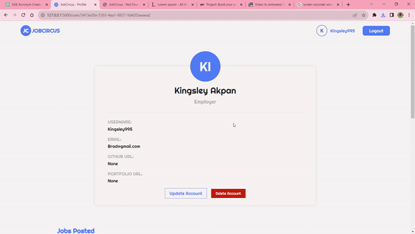
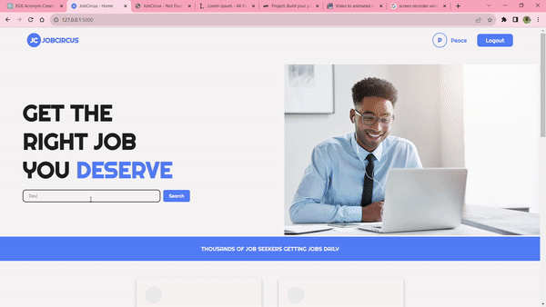

Features

Job Management
Simplify your hiring process with our Job Listing Management feature. Effortlessly create, manage, and track job listings for streamlined recruitment. Elevate your hiring strategy and attract top talent with ease.
Streamlining Part-Time and Full-Time Job Searches
Refine your search with our Job Filter feature, tailored to part-time and full-time positions. Easily narrow down candidates, streamline your hiring process, and make confident decisions for every role.


Easy Job Search
Effortlessly find the perfect candidates with our Simple Search feature. Streamline your search process, discover top talent, and make hiring decisions with ease.